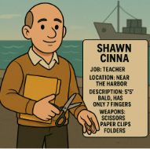
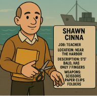

Note Williams Dej height is 4.7 feet not 47 feet
Listed Suspects:
 

Interrogation:
Stumble Door:I was dropping off the fish for Mr Don and his family like I always do.
We had a fight several years ago about him investing into my business,
but Mr Don did not end up investing. I wouldn't kill him over that.
Williams Dej: Yes, Mr Don and I were former business partners,
but he ended up kicking me out cause I was too aggressive and wanted to use more technology for better profit.
If you would have asked me then I would have killed him, but now we have no bad blood.
I have not seen the guy in years plus I live near the Great Lake and my family is my alibi.
Bently Hudson: Mr Don is a former college of mine.
We do not work together anymore because umm.. of Mr Don switching to a banker in the business industry and
not on the quantitative side.
I also was at the casino last night.
Valentino Carolino: Yeah I hate Mr Don, he and his stupid business were gambling at the casino and they broke one of the machines.
I told him he had to pay for it and he refused and instead punished me in the nose.
I could not work for several weeks and I was not able to press charges.
I also was working at the casino last night and nobody was there, it was just me.
Lee Beery Shush: Mr Dons kids would come to the school library all the time, until Mr Don found out and wanted them to not come anymore.
I confronted him about this and he said if I were to question him I would get sued.
Atleast, now that he is dead his kids can come to the library.
I also was out of town at the book fair in Leyton County.
Christine Crow:Yes, I gave Mr Dons restaurant a 2 star review after he opened his new restaurant called Dons Dumplings.
It was terrible.
The dumplings had too much meat in them and the dough was undercooked.
Plus would this not give him a motive to kill me not the other way around?
And yes he did threaten me several times to take down my review, but he is not the first to do so.
Gilfard Gliff: Yeah I used to sell my machines to Mr Don for his business with Mr Dej, but one day he suddenly told me he did not need me as a supplies.
I nearly went bankrupt because of him.
I also live with my mom by the riverside and I do not have a car.
Shawn Cinna: Yeah his kids are little brats, they would always come into my class and never listen to me.
I complained about this in our parent teacher conference with Mr Don and he sued me.
I lost almost all of my savings because of him.
I also live by the harbor and was working on my lesson plans.
Java Skripte: Yeah Mr Don let me intern at his company once, but a week later he fired me because I was a bad influence.
That internship would have gotten me into my dream school and it was paid.
I have to work double shifts now at the trainstation to save up for college, which is where I was last night.
For this case there is a killer and an accomplice so when you are guessing who did it type in the killer first and then the accomplice, like so Layla Cadet and Arrow Bar